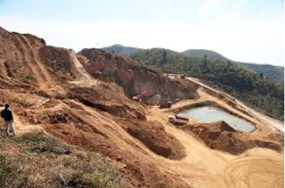
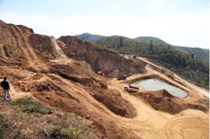

Harms to local environment
Environmental impacts of mining depend on the methods used to separate minerals from the ore material.
• Land degradation and possible rehabilitation
• Water quality, spills, and floods
• Effects on wildlife and biodiversity
A 2004 study in central Sri Lanka counted 9123 gem pits in an area of 1253ha in the region of Elahera. Extrapolated to a global scale this means that there must easily be over a million unfilled pits on the globe. This number may be difficult to imagine, so let’s take a look at the aerial view of Ilakaka (Madagascar) village and its “Banque Mondiale“ sapphire mining area: each small black dot represents a small, but often deep, gemstone mining pit. The refilling costs are massive and brings the challenge of solving this environmental and ethical to the gemstone industry.

 

Potential solutions
I. Branding of ethical gemstone sourcing
Probably, the first step of mitigating the environmental harms by sourcing gemstones is to close the information gap between suppliers and consumers. The gemstone industry has to educate consumers the importance of purchasing ethical and environmental friendly sourced gemstones. This could be effectively achieved by advertisement campaigns from influencing brands, such as Tiffany, Chaumet, Van Cleef & Arpels and so on. Indeed, Tiffany has already launched its responsible and sustainable diamond series to reinforce the importance of sustainability in the gemstone industry.
II. Synthetic Gemstone
Synthetic diamonds merely imitate the appearance of precious gems. This idea takes advantage of using gemstones mined a century ago to fund conservation, because the materials are actually already being mined in excessive quantities for applications. It takes some energy to fabricate those flashy rocks, but the total amount used may be comparable across synthetic and natural gemstone operations—at least when it comes to diamonds.
III. Advances in Gemstone Traceability Technology
In order to push forward greater transparency and accountability, the fine jewelry industry has launched new traceability technology to provide credible information on the provenance of their baubles, particularly colored gemstones. Recently, Gübelin Gem Lab introduced the “Emerald Paternity Test”, for tracing the origin of emeralds to their exact mine. They were able to do this by using nanotechnology to mark stones with an invisible imprint that is accessible at any stage of the supply chain.